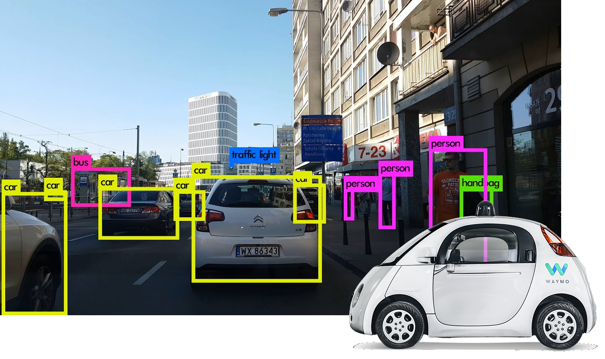

電腦是怎麼看東西的？
認識卷積神經網路
近年來隨著人工智慧的發展，電腦學會如何「看」跟「理解」的能力也越來越強，甚至達到可以跟人類媲美的程度．舉例來說：
臉書可以從我們上傳的照片中找出人臉的位置，甚至有能力找出哪些人是你的好友
蘋果的iphone使用名為faceID的技術，可以辨識出手機主人的臉部特徵，用來解鎖手機
Waymo的自動駕駛車可以在行進時辨認出前方有沒有其他車輛、行人或是號誌等物體

而這些看起來不可思議的技術背後，都有用到卷積神經網路這項技術！
一探究竟 >>